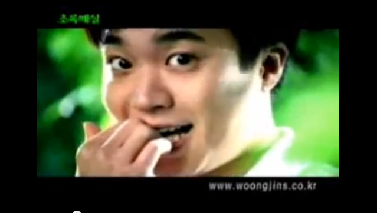

돼지
#낙천적 #불도저
돼지상은 의지, 근면, 친절과 동정, 여러 가지 성격상 장점을 갖고 있어 화가나 음악가, 시인, 문필가, 도예가 등 예술 방면이 적성에 맞는다. 돼지상을 가진 사람은 대체로 목표를 한번 정하면 그것을 달성할 때까지 꾸준히 밀고 가는 당찬 성격을 지닌다. 항상 침착하며 서두르지 않는다. 돼지 상은 천성적으로 낙천적인 기질을 지녔다고 볼 수 있다. 먹을 것이 앞에 있으면 먹어야 한다는 생각 밖에는 하지 않는 단순주의자이다. 또한 현실에서의 쾌락을 추구한다. 식복과 재복이 풍부하여 부는 누리겠으나 관운이 부족하여 귀(貴)하기는 힘들 수 있다. 지나친 욕심을 부리면 지탄을 받을 수도 있으며 내면에 소극적인 기질이 있어 매사에 의심이 많으므로 호기를 놓쳐버릴 수 있다. 돼지 상을 가진 사람은 마음속으로는 큰 야망을 품고 있어 겉으로는 단순해 보이고 생각없어 보일지언정 속으로는 큰 계획을 갖고 일을 꾸미고 있다. 자신을 치켜세워 주거나 칭찬해 주면 금방 얼굴에 웃음꽃이 피게 되니 갖고있는 야망이 올바른 방향으로 나아갈 수 있도록 본인을 많이 웃게 하는사람을 곁에 두어야 한다. 고집을 조금 내려두고 마음에 숨은 자선심으로 덕을 쌓는다면 그 누구도 부럽지 않은 부(富)를 누릴 수 있을 것이다.
상대방을 사로잡는
추천멘트
'넌 깨물어주고 싶어 앙'
